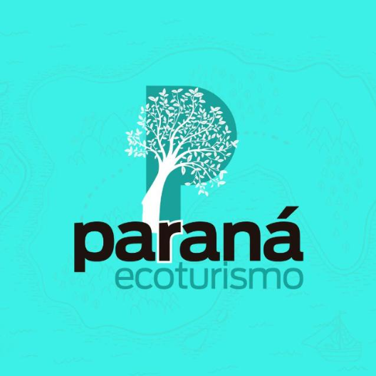
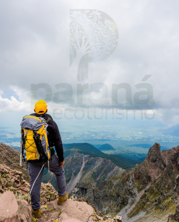

Detalhes do Roteiro
Início Sobre Nós Serviços Pacotes Atividades Contato Deixe o Vento te guiar. A gente cuida do resto. Na Paraná Ecoturismo, você escolhe a trilha e a gente entrega a emoção Esqueça roteiros prontos - Aqui as aventuras são feitas do seu jeito QUERO UMA AVENTURA Roteiros 100% personalizados, adaptados às suas necessidades e preferências. Inúmeras atividades para você se divertir Rapel, rifting, trilha, arvorismo e muito mais: descobra o lado radical (ou tranquilo) do litoral paranaense. BIKE Saiba Mais Saiba Mais Camping Saiba Mais Saiba Mais Montanhismo Saiba Mais Inúmeras atividades para você se divertir Atendemos grupos de todas as idades com conforto, segurança e aventura na medida certa. Saiba Mais Infantil Saiba Mais Saiba Mais pEDAGÓGICO Saiba Mais Empresarial Saiba Mais Veja o que falam sobre nós Quem ja viveu a experiência do Paraná Ecoturismo garante : É inesquecivel do início ao fim Publicado em Ismael Alves Cordeiro Trustindex verifica se a fonte original da avaliação é Google. Tudo Maravilhoso em questão a Casa amarela, muito espaçosa, toda mobiliada, bem iluminada, boa churrasqueira, ótimo Wi Fi. Quanto a piscina muito boa, só a água muito fria, acho interessante a água corrente direto da fonte, mas poderia ter a opção de trancar a água, pra deixar umas horas parada pra aquecer com o sol. No último dia, com tanta água na cerra e chuva, faltou água na caixa, ficamos sem poder tomar banho. No mais vale a pena passar uns dias. Publicado em Carmem Leichsenring Trustindex verifica se a fonte original da avaliação é Google. Lugar lindo Publicado em Vinicius Maia Trustindex verifica se a fonte original da avaliação é Google. Melhor experiência q já tive com a natureza Melhor lugar Vistas lindas Publicado em nelson Gonsalves Trustindex verifica se a fonte original da avaliação é Google. Lugar muito bonito recomendo 👊🏻🫡👍🏻 Publicado em Rosiane Correa Trustindex verifica se a fonte original da avaliação é Google. Lugar maravilhoso super indico 🤩 Publicado em Alexandre Correa Trustindex verifica se a fonte original da avaliação é Google. Top d+ Publicado em Fernanda Trustindex verifica se a fonte original da avaliação é Google. Lugar lindíssimo, voltarei outras vezes... Receptivo e acolhedor,vontade de ficar mais... Publicado em Mariana Maia Trustindex verifica se a fonte original da avaliação é Google. lugar lindíssimo!🤩Voltarei outras vezes. 3 motivos para nos escolher Roteiros 100% Personalizados aqui a aventura tem o seu jeito. Seja você um aventureiro raiz, uma escola, empresa ou familia, a Paraná Ecoturismo cria um roteiro sob medida, com passeis, guias, transporte até hospedagem pensados para você
Roteiros 100% Personalizados aqui a aventura tem o seu jeito. Seja você um aventureiro raiz, uma escola, empresa ou familia, a Paraná Ecoturismo cria um roteiro sob medida, com passeis, guias, transporte até hospedagem pensados para você
Galeria de Fotos

